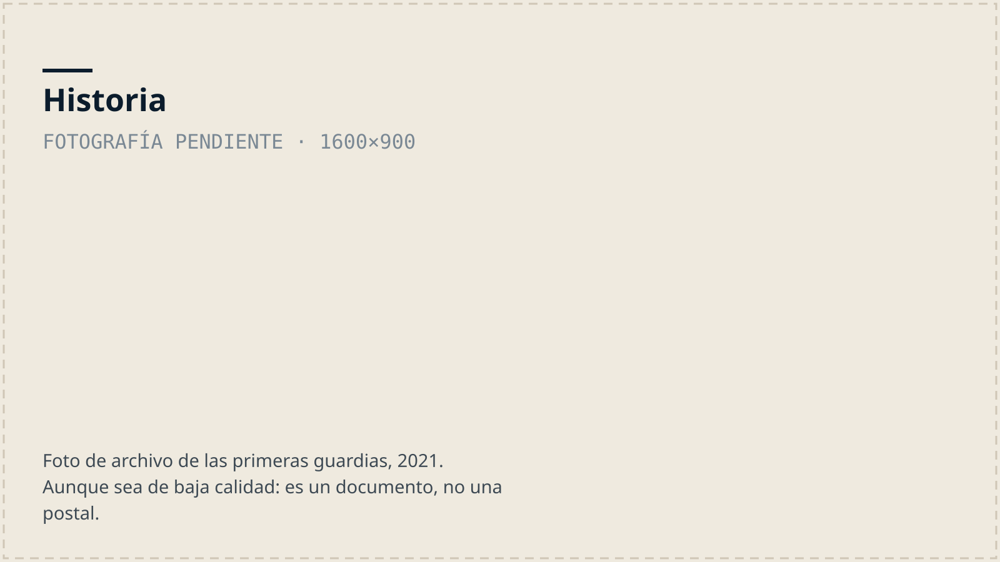
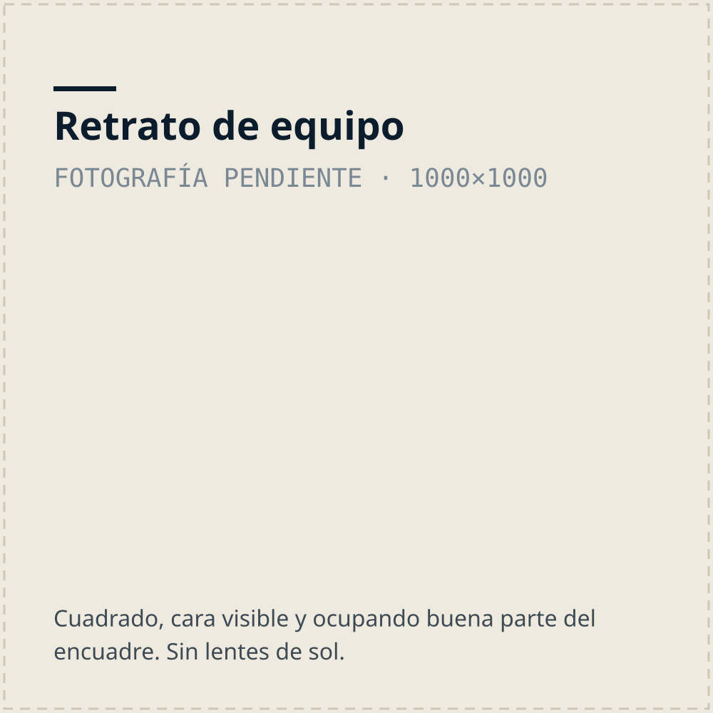
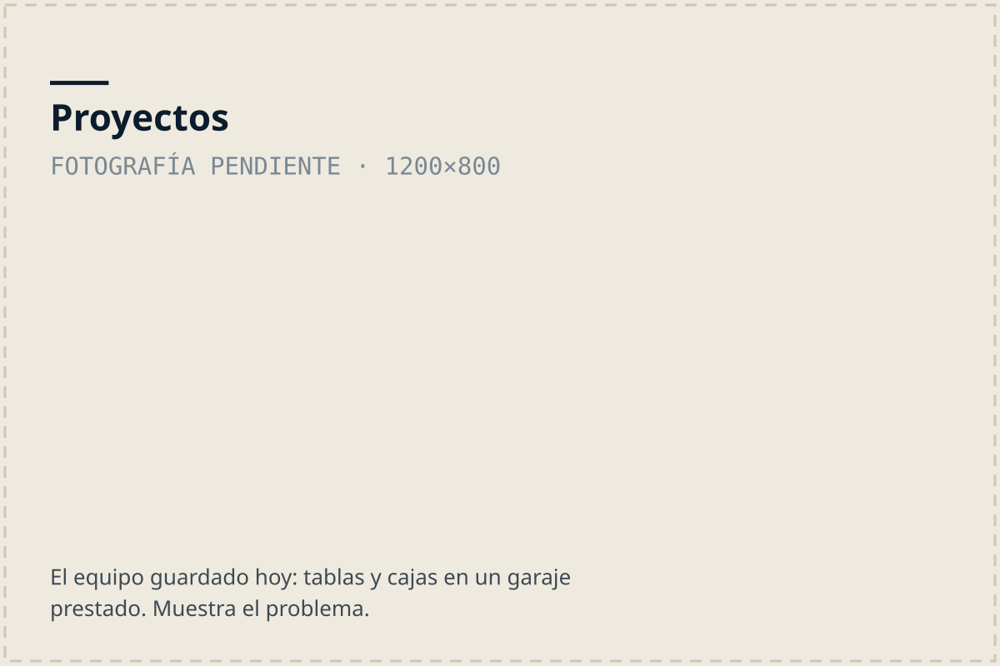

Nosotros
Una asociación comunitaria nacida en Semana Santa de 2021, cuando treinta vecinos salieron a patrullar seis playas para que nadie se muriera.
Misión: Revolucionar la seguridad acuática en el Caribe Sur y cambiar el paradigma de los incidentes por ahogamiento.
Visión: La soberanía y gestión de la seguridad acuática debe estar en manos de la comunidad, siendo la única opción para que sea sostenible. Si creamos una comunidad fuerte en el agua, vamos a reducir los incidentes acuáticos.
Nuestro objetivo principal es desarrollar y crear una comunidad que se sienta segura y sea fuerte en el agua. Enseñando y entrenando técnicas de salvamento, natación y apnea; con nuestros tres clubes buscamos reducir los ahogamientos y crear “embajadores locales” que puedan prevenir emergencias.
La columna vertebral de nuestra organización es la educación continua, ofreciendo cursos y formando: Guardavidas, instructores de RCP y primeros auxilios, instructores de natación y de freediving, que a su vez enseñan a la comunidad. Estos esfuerzos aseguran que los miembros de la comunidad sean más seguros en el agua. También buscamos desarrollar programas como la iniciativa Bandera Roja y Amarilla para playas organizadas y la guardia móvil. Nuestro objetivo final es establecer un Centro Acuático de Alto Rendimiento en el Caribe Sue que unifique todas las actividades relacionadas con el agua, comenzando por enseñar a la comunidad a flotar y nadar, y asegurarnos que el CADAR financie a la organización para ser autosuficientes.

Historia
De una campaña de videos a una asociación con más de 70 miembros y 400 personas formadas.
Leer la historia →Visión
Quién debe ser responsable del salvamento acuático en Costa Rica, y la ley de tercios.
Leer la visión →

Proyectos
Lo que todavía necesitamos: bodega, guardia móvil y el centro acuático.
Ver los proyectos →